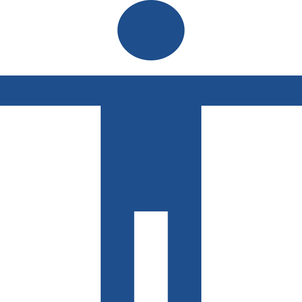

Encuentra servicios sociales cerca de ti
CercaRed es la plataforma oficial de orientación social institucional que conecta a los ciudadanos con los recursos públicos y comunitarios que necesitan. Acceso directo, verificado y cercano.
Servicios destacados
Apoyo alimentario
Encuentra comedores populares, programas de alimentación y orientación para familias que necesitan apoyo básico.
Ver serviciosAtencion de salud
Consulta servicios de salud, afiliación, campañas médicas y canales de atención según tu ubicación.
Ver serviciosApoyo educativo
Revisa becas, orientación educativa, programas de capacitación y beneficios para estudiantes o familias.
Ver serviciosVivienda
Accede a información sobre programas de vivienda, apoyo habitacional y requisitos para postular.
Ver serviciosCómo funciona
Busca
Escribe el servicio, beneficio o ayuda que necesitas encontrar.
Filtra
Selecciona una categoría o distrito para ver opciones más relevantes.
Revisa
Consulta requisitos, pasos y canales de atención en una sola vista.
Accede
Ingresa al canal oficial para confirmar la información o iniciar el trámite.
Modo simple
Una vista más clara, con textos grandes, menos elementos visuales y acciones principales visibles para encontrar servicios sin dificultad.
Modo simple
Información 100% verificada
Mostramos datos obtenidos de canales institucionales y enlaces oficiales para que puedas consultar requisitos, pasos y formas de atención con mayor confianza
Preguntas frecuentes
¿CercaRed es una página del Gobierno?
No. Somos una guía de orientación que simplifica requisitos y pasos de programas oficiales. Te ayudamos a entender qué necesitas y te conectamos directamente con el canal oficial de la entidad responsable para que realices tu gestión con seguridad y sin confusiones.
¿Qué es el "Modo Simple" y cómo lo activo?
El "Modo Simple" es una configuración de visualización diseñada para facilitar la lectura. Adapta los tamaños de fuente, aumenta los contrastes y simplifica los menús de navegación. Puedes activarlo directamente desde el botón ubicado en la barra superior de la página.
¿CercaRed realiza los trámites por mí?
No. Somos una guía de orientación que simplifica requisitos y pasos de programas oficiales. Te ayudamos a entender qué necesitas y te conectamos directamente con el canal oficial de la entidad responsable para que realices tu gestión con seguridad y sin confusiones.